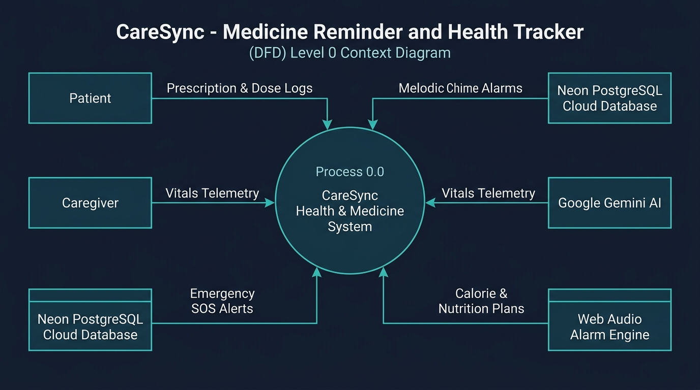
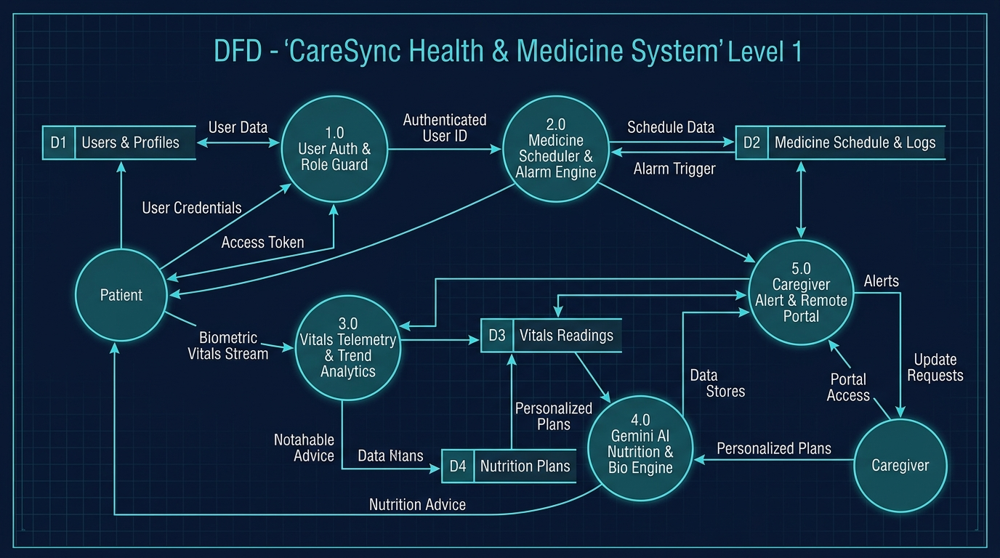
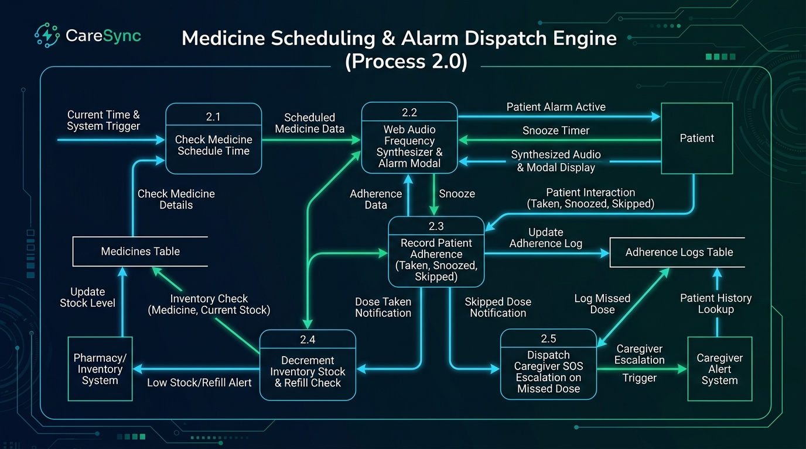

Visual data flow models illustrating processes, external entities, and data stores.

Depicts the overall system context (Process 0.0) interfacing with external entities: Patient, Caregiver, Neon Cloud PostgreSQL Database, Google Gemini AI, and Web Audio Synthesizer.

Decomposes the core system into 5 discrete sub-processes and 4 persistent data stores:

Details the inner loop of Process 2.0: